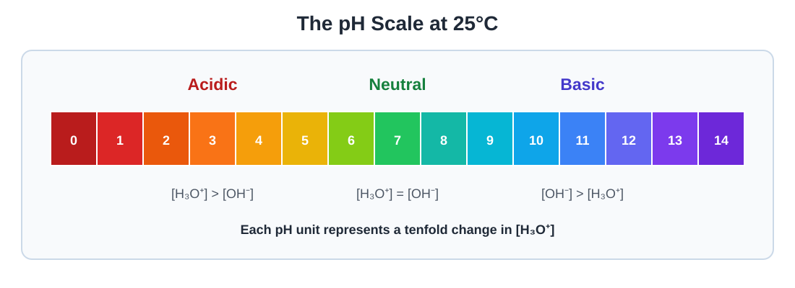
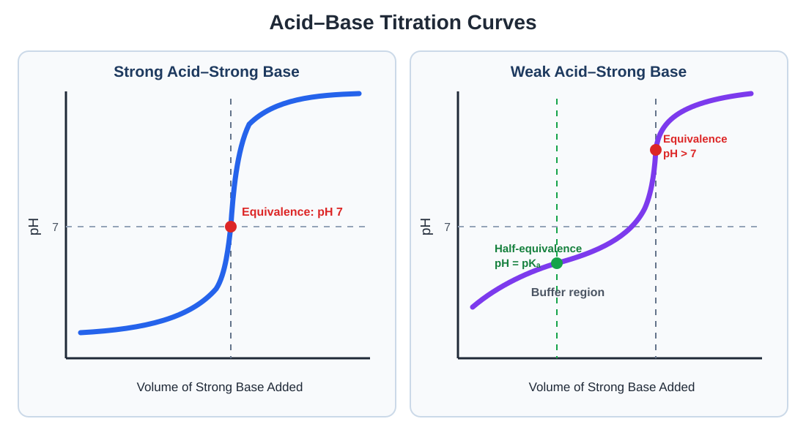

Acids and Bases
Explore acid–base definitions, pH calculations, weak-acid and weak-base equilibria, buffers, titrations, molecular structure, and indicators.
Topics
Acid–Base Fundamentals and pH
Identify acids, bases, conjugate pairs, and amphoteric substances and calculate pH and pOH for strong acids and bases.
Weak Acids, Weak Bases, and Buffers
Use Ka, Kb, and equilibrium calculations to analyze weak acids, weak bases, conjugates, and buffer solutions.
Titrations and Indicators
Analyze acid–base titrations, equivalence points, titration curves, buffer regions, and indicator selection.
Acid–Base Fundamentals and pH
Acids and bases can be identified by how they behave in water and how they transfer protons during chemical reactions.
Arrhenius Acids and Bases
The Arrhenius definition focuses on substances dissolved in water.
Arrhenius base: Produces OH− in water.
For example:
Brønsted–Lowry Acids and Bases
The Brønsted–Lowry definition describes acid–base reactions as transfers of H+, also called protons.
Brønsted–Lowry base: Proton acceptor
Example: Proton Transfer
NH3 accepts H+, so it acts as a base. H2O donates H+, so it acts as an acid.
Conjugate Acid–Base Pairs
When an acid donates a proton, it becomes its conjugate base. When a base accepts a proton, it becomes its conjugate acid.
Consider the reaction:
| Species | Role | Conjugate Partner |
|---|---|---|
| HCl | Acid | Cl− |
| H2O | Base | H3O+ |
Amphiprotic Substances
An amphiprotic substance can either donate or accept a proton, depending on the substance with which it reacts.
Water is amphiprotic. It can accept H+ to form H3O+, or donate H+ to form OH−.
HCO3− is another amphiprotic species:
Strong and Weak Acids
A strong acid ionizes essentially completely in water. A weak acid ionizes only partially and establishes an equilibrium.
Common strong acids include:
- HCl
- HBr
- HI
- HNO3
- HClO4
- H2SO4 for its first proton
Strong and Weak Bases
Strong bases dissociate essentially completely in water. Common strong bases include soluble Group 1 metal hydroxides and the more soluble Group 2 metal hydroxides.
Weak bases react only partially with water.
Strength describes the extent of ionization. Concentration describes how much solute is present per volume of solution.
Autoionization of Water
A small fraction of water molecules transfer protons to one another.
The equilibrium constant for this process is called the ion-product constant for water, Kw.
At 25°C:
In neutral water at 25°C:
The pH Scale

At 25°C:
Although the commonly displayed pH scale runs from 0 to 14, sufficiently concentrated solutions can have pH values outside this range.
Calculating pH of a Strong Acid
Example: HCl Solution
Calculate the pH of 0.00320 M HCl.
HCl is a strong acid and ionizes completely. Because it supplies one H3O+ for each HCl:
Calculating pH of a Strong Base
Example: Ba(OH)2 Solution
Calculate the pH of 0.0150 M Ba(OH)2 at 25°C.
Each formula unit produces two hydroxide ions:
Finding Concentration from pH
The inverse logarithmic relationships are:
Example: Finding Hydronium Concentration
Calculate [H3O+] in a solution with a pH of 4.35.
Practice Questions
Question 1: Conjugate Acid–Base Pairs
Consider the reaction:
Identify the acid, base, conjugate acid, and conjugate base.
Show solution
H2PO4− donates H+, so it is the acid.
H2O accepts H+, so it is the base.
HPO42− is the conjugate base of H2PO4−.
H3O+ is the conjugate acid of H2O.
Question 2: Amphiprotic Behavior
Explain why HSO4− can be classified as amphiprotic.
Show solution
HSO4− can donate a proton and become SO42−:
It can also accept a proton and become H2SO4:
Because it can either donate or accept a proton, it is amphiprotic.
Question 3: Calculating Strong-Acid pH
Calculate the pH of a 0.00250 M HNO3 solution.
Show solution
HNO3 is a strong acid and ionizes essentially completely.
Question 4: A Strong Base with Two Hydroxides
Calculate the pH of 0.0125 M Ca(OH)2 at 25°C. Assume complete dissociation.
Show solution
Each mole of Ca(OH)2 produces two moles of OH−.
Question 5: Concentrations from pH
A solution has a pH of 3.72 at 25°C. Calculate [H3O+] and [OH−].
Show solution
Calculate the hydronium concentration:
Use Kw to find hydroxide concentration:
Question 6: Comparing pH Values
Solution X has a pH of 2.50, while Solution Y has a pH of 4.50. How many times greater is [H3O+] in Solution X?
Show solution
The difference in pH is:
Each pH unit represents a factor of ten in hydronium concentration.
Solution X has 100 times greater [H3O+] than Solution Y.
Question 7: Strength Versus Concentration
A student claims that a concentrated weak acid must be stronger than a dilute strong acid. Explain why this statement is incorrect.
Show solution
Strength and concentration describe different properties.
Acid strength describes the extent to which an acid ionizes. A strong acid ionizes essentially completely, while a weak acid ionizes only partially.
Concentration describes the amount of acid present per volume of solution. A weak acid can be concentrated, and a strong acid can be dilute, without changing their classifications.
Watch: Strong Acids, Bases, and pH
Watch a worked example showing how to identify conjugate pairs and calculate pH, pOH, and ion concentrations.
Weak Acids, Weak Bases, and Buffers
Weak acids and bases react only partially with water. Their solutions must therefore be analyzed as equilibrium systems rather than by assuming complete ionization.
Weak-Acid Equilibrium
A weak acid, represented by HA, transfers only a fraction of its protons to water.
The acid-ionization constant is:
A smaller Ka indicates a weaker acid and a smaller extent of ionization.
Calculating the pH of a Weak Acid
Example: Weak-Acid ICE Table
Calculate the pH of 0.100 M CH3COOH. Ka = 1.8 × 10−5.
| CH3COOH | H3O+ | CH3COO− | |
|---|---|---|---|
| Initial | 0.100 | 0 | 0 |
| Change | −x | +x | +x |
| Equilibrium | 0.100 − x | x | x |
Because Ka is small, x is expected to be much smaller than 0.100. Approximate 0.100 − x as 0.100.
The Five-Percent Check
When x is removed from an initial concentration, the approximation that initial concentration minus x is nearly equal to the initial concentration should be checked.
For the previous example:
Because the result is less than 5%, the approximation is reasonable. If it exceeds 5%, solve the complete equation, usually with the quadratic formula.
Percent Ionization
Weak-Base Equilibrium
A weak base accepts a proton from water and produces its conjugate acid and hydroxide.
Example: Weak-Base pH
Calculate the pH of 0.200 M NH3. Kb = 1.8 × 10−5.
Conjugate Strength
The stronger an acid is, the weaker its conjugate base is. Similarly, the stronger a base is, the weaker its conjugate acid is.
For a conjugate acid–base pair at 25°C:
Example: Finding a Conjugate Kb
An acid has Ka = 2.0 × 10−5. Find Kb for its conjugate base.
pKa and Acid Strength
A smaller pKa means a stronger acid.
Molecular Structure and Acid Strength
Acid strength depends on how easily a molecule can lose H+ and how stable its conjugate base is.
- A more polar H—A bond can make the hydrogen more positive and easier to remove.
- A weaker H—A bond is generally easier to break.
- A more stable conjugate base generally corresponds to a stronger acid.
- Resonance can stabilize a conjugate base by spreading its negative charge across multiple atoms.
For oxyacids with the same central atom, additional oxygen atoms generally increase acid strength because they withdraw electron density and stabilize the conjugate base.
Polyprotic Acids
A polyprotic acid can donate more than one proton. Each proton is removed in a separate equilibrium step.
For a diprotic acid H2A:
Ka1 > Ka2 > Ka3
Buffer Solutions
A buffer resists large changes in pH when a small amount of strong acid or strong base is added.
A buffer commonly contains either:
- A weak acid and its conjugate base
- A weak base and its conjugate acid
Example: How a Buffer Responds
Consider a buffer containing HA and A−.
When strong acid is added:
When strong base is added:
The buffer converts the added strong acid or base into a weaker species, reducing the resulting change in pH.
The Henderson–Hasselbalch Equation
The pH of a weak-acid buffer can be calculated using:
pH = pKa
Example: Calculating Buffer pH
A buffer contains 0.100 M HA and 0.200 M A−. The acid has a pKa of 4.74. Calculate the pH.
Buffer Capacity
Buffer capacity describes how much strong acid or strong base a buffer can absorb before its pH changes substantially.
A buffer works most effectively when the weak acid and conjugate base concentrations are similar.
Henderson–Hasselbalch is generally most useful when the ratio of conjugate base to weak acid is between approximately 0.1 and 10.
Adding Strong Acid or Base to a Buffer
When a strong acid or base is added to a buffer, perform the stoichiometric reaction first. Then use the remaining amounts of weak acid and conjugate base in the Henderson–Hasselbalch equation.
1. React the added strong acid or base completely
2. Determine the new amounts of HA and A−
3. Use Henderson–Hasselbalch to calculate the new pH
Practice Questions
Question 1: Weak-Acid pH
Calculate the pH of a 0.200 M solution of a weak acid HA with Ka = 4.0 × 10−6.
Show solution
| HA | H3O+ | A− | |
|---|---|---|---|
| Initial | 0.200 | 0 | 0 |
| Change | −x | +x | +x |
| Equilibrium | 0.200 − x | x | x |
The solution has a pH of 3.05.
Question 2: Percent Ionization
Using the results from Question 1, calculate the percent ionization of the weak acid.
Show solution
Because this result is below 5%, the approximation used in Question 1 is reasonable.
Question 3: Weak-Base pH
Calculate the pH of 0.150 M weak base B if Kb = 2.5 × 10−5.
Show solution
Question 4: Conjugate-Base Strength
A weak acid has Ka = 6.3 × 10−5. Calculate Kb for its conjugate base at 25°C.
Show solution
The relatively small Kb is consistent with the inverse relationship between an acid’s strength and the strength of its conjugate base.
Question 5: Comparing Weak-Acid Strength
Three weak acids have the following values:
- Acid X: Ka = 1.0 × 10−3
- Acid Y: Ka = 4.0 × 10−6
- Acid Z: Ka = 7.0 × 10−9
Rank the acids from strongest to weakest. Then rank their conjugate bases from strongest to weakest.
Show solution
A larger Ka indicates a stronger acid.
Conjugate-base strength follows the reverse order.
Question 6: Buffer pH
A buffer contains 0.150 M weak acid HA and 0.300 M conjugate base A−. The acid has a pKa of 4.20.
Calculate the buffer’s pH.
Show solution
Question 7: Adding Strong Acid to a Buffer
A buffer initially contains 0.100 mol HA and 0.150 mol A−. The acid has pKa = 4.76.
Calculate the pH after 0.0200 mol HCl is added. Assume the volume change is negligible.
Show solution
The added strong acid reacts with the conjugate base:
Subtract the added acid from A− and add the same amount to HA.
Because both substances occupy the same final volume, their mole ratio can be used directly.
Question 8: Selecting a Buffer
Which mixture can function as a buffer? Explain.
- HCl and NaCl
- HF and NaF
- NaOH and NaCl
Show solution
HF and NaF can form a buffer.
HF is a weak acid, and NaF supplies its conjugate base, F−. Both components are available to react with small additions of strong base or strong acid.
HCl and NaOH are strong, so the other listed mixtures do not contain the required weak species and its conjugate partner.
Question 9: Dilution and Percent Ionization
A weak acid solution is diluted with water. Explain what happens to its hydronium concentration, pH, and percent ionization.
Show solution
Dilution decreases [H3O+], so the solution’s pH increases.
However, dilution also shifts the weak-acid ionization equilibrium toward the ions. Therefore, a greater percentage of the acid molecules ionize.
The hydronium concentration decreases while the percent ionization increases.
Watch: Weak Acids and Buffers
Watch a worked example involving weak-acid equilibrium, percent ionization, conjugate strength, or buffer pH.
Titrations and Indicators
An acid–base titration uses a solution with a known concentration to determine the amount or concentration of an acid or base in another solution.
Important Titration Terms
| Term | Meaning |
|---|---|
| Titrant | The solution of known concentration that is gradually added |
| Analyte | The solution whose concentration or amount is being determined |
| Equivalence point | The point at which stoichiometrically equivalent amounts of acid and base have reacted |
| Endpoint | The observed indicator color change used to estimate the equivalence point |
Titration Stoichiometry
Before calculating pH, first determine the number of moles of acid and base that react.
Use the balanced neutralization equation to compare the acid and base amounts.
Example: Finding an Unknown Concentration
A 25.00 mL HCl sample is neutralized by 20.00 mL of 0.1500 M NaOH. Calculate the HCl concentration.
Calculate the moles of NaOH:
HCl and NaOH react in a one-to-one ratio, so the sample contains 0.003000 mol HCl.
Titration Curves
A titration curve displays pH on the vertical axis and volume of titrant added on the horizontal axis.

Strong Acid–Strong Base Titration
Consider a strong acid being titrated with a strong base. Both substances ionize essentially completely.
| Region | How pH Is Determined |
|---|---|
| Before titrant is added | Initial strong-acid concentration |
| Before equivalence | Excess moles of strong acid |
| At equivalence | Approximately pH 7 at 25°C |
| After equivalence | Excess moles of strong base |
Calculating pH Before Equivalence
Example: Excess Strong Acid
A 25.0 mL sample of 0.100 M HCl is titrated with 15.0 mL of 0.100 M NaOH. Calculate the pH.
Calculate the initial moles of HCl:
Calculate the moles of NaOH added:
Determine the excess HCl:
Divide by the total solution volume:
Weak Acid–Strong Base Titration
A weak acid–strong base titration contains several chemically different regions.
| Region | Major Species or Calculation |
|---|---|
| Initial solution | Weak-acid equilibrium using Ka |
| Before equivalence | Buffer containing HA and A− |
| Half-equivalence point | [HA] = [A−] and pH = pKa |
| Equivalence point | Conjugate base hydrolysis; pH greater than 7 |
| After equivalence | Excess strong base determines pH |
The Half-Equivalence Point
At the half-equivalence point, exactly half of the original weak acid has been converted into its conjugate base.
This point can be used to determine Ka from an experimental titration curve.
Example: Finding Ka from a Curve
A weak acid reaches its equivalence point after 30.0 mL of strong base has been added. The pH after 15.0 mL has been added is 4.60.
Because 15.0 mL is half of the equivalence-point volume, this is the half-equivalence point.
Why the Weak-Acid Equivalence Point Is Basic
At equivalence, the weak acid has been converted into its conjugate base. That conjugate base reacts with water to produce OH−.
Therefore, the equivalence-point pH is greater than 7 for a weak acid titrated with a strong base.
Strong Acid–Weak Base Titrations
If a weak base is titrated with a strong acid, the equivalence solution contains the weak base’s conjugate acid.
The conjugate acid produces hydronium, so the equivalence-point pH is less than 7.
Comparing Equivalence Points
| Titration | Equivalence-Point pH at 25°C |
|---|---|
| Strong acid with strong base | Approximately 7 |
| Weak acid with strong base | Greater than 7 |
| Weak base with strong acid | Less than 7 |
Acid–Base Indicators
An acid–base indicator is a weak acid or weak base whose two forms have different colors.
The color transition occurs over a range of pH values near the indicator’s pKa.
An indicator does not need to change color exactly at pH 7. Its useful range must instead overlap the rapid pH change near the equivalence point.
Common Titration Strategy
2. Complete the neutralization reaction
3. Identify which titration region applies
4. Use the correct remaining species to calculate pH
Practice Questions
Question 1: Identifying a Titration Curve
A titration curve begins at a moderately acidic pH, contains a buffer region, and has an equivalence point above pH 7.
What type of titration does the curve represent?
Show solution
The curve represents a weak acid titrated with a strong base.
The weak acid causes the initial pH to be higher than that of a strong acid with the same concentration. The mixture of weak acid and conjugate base creates the buffer region.
At equivalence, the conjugate base reacts with water to produce OH−, causing the pH to be greater than 7.
Question 2: Diprotic-Acid Stoichiometry
A 20.00 mL sample of H2SO4 is neutralized by 30.00 mL of 0.1600 M NaOH.
Calculate the concentration of the H2SO4 solution.
Show solution
Calculate the moles of NaOH:
Two moles of NaOH react with one mole of H2SO4.
Question 3: pH after the Equivalence Point
A 25.0 mL sample of 0.100 M HCl is titrated with 30.0 mL of 0.100 M NaOH. Calculate the pH after the base has been added.
Show solution
Calculate the initial moles of acid:
Calculate the moles of base added:
Determine the excess hydroxide:
The total volume is:
Question 4: Half-Equivalence Point
A weak acid reaches its equivalence point after 40.0 mL of strong base is added. The pH after 20.0 mL of base has been added is 5.20.
Determine the acid’s pKa and Ka.
Show solution
Half of 40.0 mL is 20.0 mL, so this measurement was taken at the half-equivalence point.
Question 5: pH in the Buffer Region
A sample initially contains 0.00250 mol of weak acid HA. During its titration, 0.00100 mol of strong base is added. The acid has a pKa of 4.74.
Calculate the pH before the equivalence point. Assume the base reacts completely with HA.
Show solution
The added base consumes 0.00100 mol HA and produces 0.00100 mol A−.
Use Henderson–Hasselbalch. The mole ratio can be used because both species occupy the same volume.
Question 6: Equivalence-Point Reasoning
Explain why the equivalence-point pH is above 7 when a weak acid is titrated with a strong base.
Show solution
At equivalence, the strong base has converted the weak acid into its conjugate base.
The conjugate base reacts with water and produces OH−. Therefore, the equivalence-point solution is basic and has a pH above 7.
Question 7: Selecting an Indicator
A titration has an equivalence point near pH 8.8. Three indicators have the following transition ranges:
- Indicator A: pH 3.1–4.4
- Indicator B: pH 6.0–7.6
- Indicator C: pH 8.2–10.0
Which indicator is the best choice?
Show solution
Indicator C is the best choice because its transition range includes pH 8.8.
Its color change should occur within the steep region surrounding the equivalence point.
Question 8: Titration Error Analysis
A student titrates an unknown acid but adds excess base beyond the indicator endpoint. The student uses the recorded volume to calculate the acid concentration.
Will the calculated acid concentration be too high or too low? Explain.
Show solution
The calculated acid concentration will be too high.
The recorded base volume is greater than the volume actually required for neutralization. This causes the calculated moles of base—and therefore the calculated moles of acid—to be too large.
Question 9: Comparing Titration Curves
Equal concentrations and volumes of a strong acid and weak acid are separately titrated with the same strong base. Compare their initial pH values and equivalence-point volumes.
Show solution
The strong acid has the lower initial pH because it ionizes essentially completely.
The weak acid has the higher initial pH because it ionizes only partially.
The equivalence-point volumes are the same because the samples contain the same total moles of monoprotic acid. Acid strength changes the initial pH, but not the number of moles requiring neutralization.
Watch: Titration Curves
Watch a worked example showing how to identify titration regions, calculate pH, locate the half-equivalence point, and select an indicator.